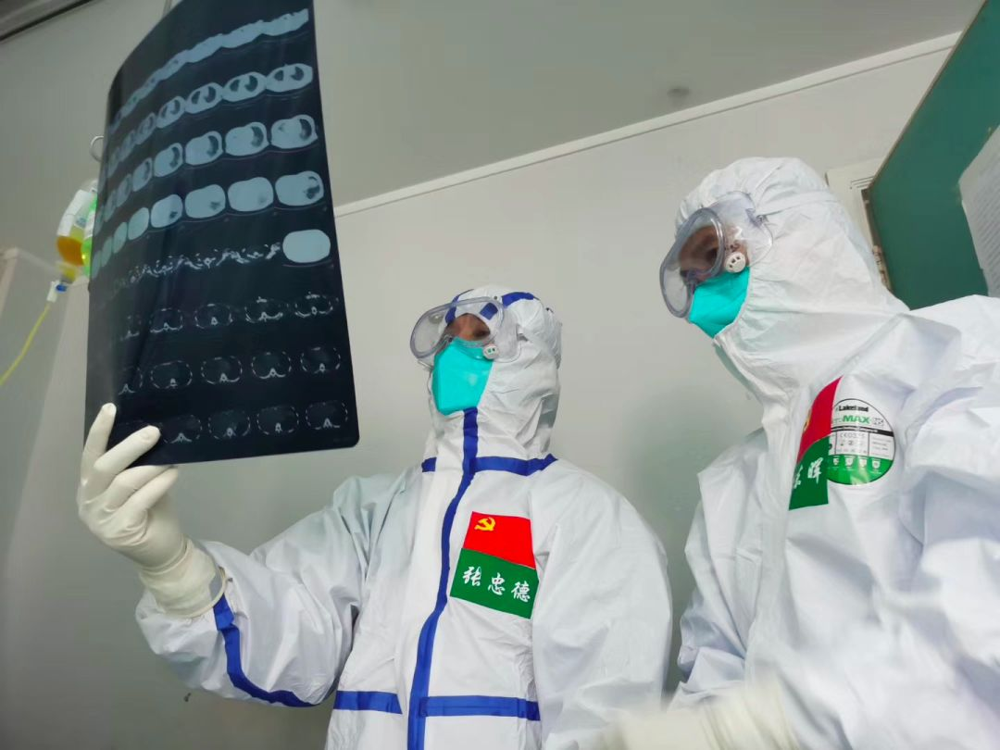
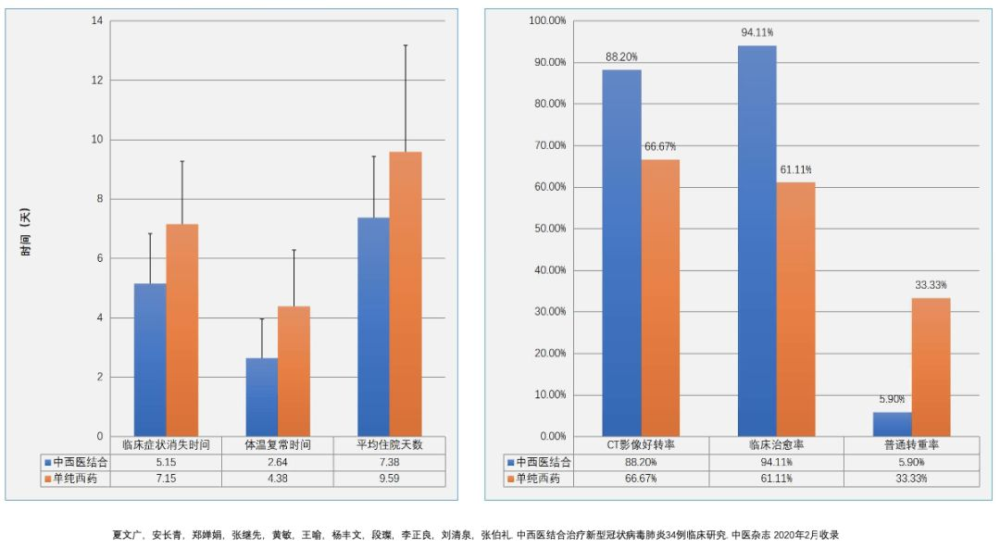

呼吁康复期患者捐血浆用于治疗？清华药学院院长：不大可能大规模推开
原文链接 备份链接 大范围推广仍需进一步临床试验的评估2月13日晚，在湖北省新冠疫情新闻发布会上，武汉市金银潭医院院长张定宇表示，康复后的患者体内有大量的中和抗体来抵抗新冠病毒。他呼吁康复期患者捐献血浆，共同拯救还在与病魔作斗争的病 …


与2003年“非典”不同，中医在第一时间就加入了新冠抗疫治疗。
新冠病毒“人传人”对外披露后仅一周，国家版诊疗方案即加入中医“协定方”。
中医国家队认为新冠疫情为“湿疫”，治疗方针以祛湿为主，旨在消除人体内病毒的生存条件。
北京、广东两支中医医疗队进驻武汉金银潭医院、中西医结合医院，接手部分病区的患者，迄今疗效显著，副作用更小。
“双黄连抗病毒”闹剧加深民众对中医的质疑，看待中医抗疫应有辩证思维。


△ 受访者供图
黄东晖医生一直都记得，1月29日下午，病区阴郁的味道。武汉那一天是大晴天，阳光透过窗户洒在了刚接手的病区里，但整个病区却像是有一道不透光的墙，压抑极了。
黄东晖是广东省中医院援助湖北医疗队临时党支部书记、队长。1月27日随广东医疗队抵达武汉之后，60余位中医医疗队的同事接手了湖北省中西医结合医院的两个病区，总计70张床位。
这支中医医疗队很特殊，由广东省中医院、广州中医药大学第一附属医院以及广东省第二中医院组成，主要用中西医结合的方式治疗急危重症患者。医疗队的很多人都亲历过2003年“非典”救治，其中国家援助湖北第二支中医医疗队队长、广东省中医院副院长张忠德，以及黄东晖本人甚至被“非典”严重感染过，一度危急，在影像资料中两肺全白，经历死里逃生后，用中医药的治疗方法康复，肺部没有留下任何斑痕，现在游泳、跑步等剧烈运动也能照常进行。
与此同时，北京医疗队中的一支中医队伍，也在同期进驻武汉金银潭医院、湖北省中西医结合医院。
此次疫情防治与17年前的“非典”时期相比最大的不同之一，就是中医很早就加入了治疗队伍，且各级政府不断发文力推。1月20日，就在病毒“人传人”确认后的第二天，首都医科大学附属北京中医医院院长刘清泉就奔赴武汉；1月24日，除夕夜，广东省中医院副院长张忠德一个人先从广州赶往武汉；同一天，中国科学院院士、中国中医科学院广安门医院科研副院长仝小林等人南下，抵达武汉。随后赶到的是中国中医科学院院长黄璐琦院士。
1月22日，国家《新冠病毒诊疗方案（第三版）》发布，加入了中医处方建议。
1月25日，大年初一，中央会议强调要在抗击疫情期间“加强中西医结合”。1月26日，仝小林与中医业内的多位国医大师、专家进行电话会议，商榷中医治疗方案。1月27日，国家卫健委公布《第四版诊疗方案》，给出了协定方（中医界特指经过一定时间使用，积累了一定的经验和疗效而约定俗成的方子）的具体配伍用量。
从1月20日确认“人传人”起，短短一周之内，国家版诊疗方案中的中医协定方就落定并公布，这样的做法在“非典”时期是没有过的。疫情急迫，病毒传播速度惊人，确定诊疗方向甚为重要。既然是“协定方”，则意味着是供参考用的方子，后续再可根据各地差异，进行方剂调整。
无论是17年前的“非典”，还是新冠肺炎，中医药在此类疫情中的作用时常被坊间提及，却又屡屡被遗忘在大众的视野之外。它究竟是一种充满争议的经验医学，还是确有疗效的系统医学？如果“非典”时期中医在北京、广东的治疗中功不可没，它治病背后的道理是什么，这回还能用得上么？
患者病情比想象严重，个别人抗拒中药
1月29日是黄东晖查房的第一天。从第一间病房，到最后一间病房，每查一间病房，压力就徒增几分——患者非常虚弱，询问病情的时候，基本上声音都发不出来，气喘干咳得厉害。“给他们切脉，大多数是沉脉、滑数脉，舌苔厚腻，发烧严重，便秘干结，好几天都拉不出来，也没什么胃口。”
虽然医疗队有抗击“非典”的经验，也做好了充分的准备，但走进隔离病区的时候，黄东晖仍感觉比想象中要严重，压力也很大。当时，病区改造条件尚未完善，监护仪等医疗设备都没有，交叉感染的危险很大。令医护人员压力更大的是患者的病情，这里两个病区的患者，以老年人居多，最高年龄达到90多岁，很多患者还伴有高血压、糖尿病等基础性疾病，颇为棘手。
在中医理论中，情绪与疾病息息相关，黄东晖所在的中医医疗队更是深谙此道。他回忆道，1月29日第一次查房时，医疗队就和病人们说，“我们是从广东过来的，有着非常成熟的经验，我们来了，你们放心，你们会没事的。尤其是我们的队长（张忠德副院长）当年被“非典”击倒的时候，情况要比你严重多了，也被中西医结合方案救了过来，所以你一定要相信我们，你一定会没事的。”

△ 受访者供图
黄东晖回忆，当患者听到这些的时候，“他们没什么体力，很虚弱，都挣扎着坐起来，双手合十作揖，来感谢我们。就说一定要我们把他救下来，他们还有很多牵挂。”
第一次查房后，黄东晖和同事们工作到深夜。他们参考国家版协定方，仔细商定中医治疗方案。第二天一大早，熬好的中药就被送进了病房。但有些患者的抵触情绪给医护人员们泼了一盆冷水。他说，至今还有一两个患者拒绝喝中药。只能靠医护软磨硬泡，或者重新调整方案。
黄东晖说，他们虽然是中医医疗队，但在具体治疗过程中强调中西医协同治疗，原则是看哪个方案对病情更有帮助，危重症患者尤其要用中西医结合的方式治疗。遇到基础疾病较多的患者，医疗队就会通过远程会诊手段，集全国的中医专家智慧和力量来制定治疗方案。“我们还担心患者出院后的肺纤维化，这个如果不注意，会给患者日后的生活各方面造成很大的伤害。”
很多患者非常焦虑，医生们也用了很多时间做心理疏导。最令黄东晖感动的是，刚开始去给患者做治疗时，很多人的表情都极为淡漠。而现在，“只要一接近他们，马上就拿手挡住说，不要靠近我，会传染给你们。”在他看来，人与人之间这种情感，通过这种细微的动作就体现出来，非常温暖。
2月5日，黄东晖负责病区的第一位重症患者出院了。她是一名37岁的女性，一开始拒服中药，但在服用中药的第一天，高烧基本就退了。在服药第二天时，身体整体情况更为好转，说了五句话后，才稍微喘一下。大便也有了明显变化，从开始的便秘到黄色成型。舌苔开始变得淡薄，脉象也开始变得平稳。身体可以坐起来，也可以下床稍微走一下。出院那天，她自己都不敢相信，说如果不是医护人员的专业治疗和精心照顾，可能现在都出不了院。元宵节那天，这名女患者还录了个视频，给还在和疾病抗争的病友们加油，分享她的抗病经验。
迄今，黄东晖所在的病区共收治了60名患者，除了4人是轻症，其他都是重症或危重症。目前，已有19名患者出院，还有22名患者转到了缓冲病房（符合出院标准转至缓冲病房）。重症患者中，经过中医治疗，起效很快，疗效明显。
病房的欢笑声多了起来。有些病区的患者会一起打打八段锦，或者看一些小品、相声的视频，转移注意力。
张忠德在2月14日晚间的湖北疫情新闻发布会上说，截至2月13日12时，广东中医医疗队累计收治116名患者，其中重症85例，危重病人14例，轻症8例。目前，已出院的患者有19例，另有22名患者符合出院标准，但尚在缓冲病房留观。
北京中医医疗队的带队人是黄璐琦院士，这支队伍也有40名医护人员，负责金银潭医院的一个病区42张床位。截至2月14日12时，累计收治86名患者，其中重症65例，危重症两例。目前已出院33人，其中八人为纯中医治疗。
黄璐琦表示，33名出院患者（包括中西医结合与纯中医治疗）与医院里的西医治疗组做了对照观察，结果显示“在发热、咳嗽、乏力、咽干、心慌、食欲减退等十个症状，比西医组有明显改善”，而且“中西医结合组的平均住院时间，显著少于西医组”。

△ 受访者供图
“非典”亲历者挂帅
此次疫情中，中医在第一时间就得以介入治疗工作，与17年前“非典”时期发挥作用密切相关。此次驻守武汉两家医院的北京医疗队和广东医疗队，二者的领队都是“非典”一线临床治疗的亲历者。
“非典”对张忠德是刻骨铭心的记忆。他当时是在抢救患者的一线，不幸感染SARS病毒，濒临病危，在中医介入治疗后逐渐康复，没有留下任何后遗症。
当时护士长叶欣与其病床相邻，病情更危重，张忠德眼看着并肩作战的同事经抢救无效离世，万分悲痛。此次来武汉，他比其他同事先到的那几天里，一直睡不好觉，最担心的就是队员防护，他希望把同事们“健健康康带过来，也把他们平平安安带回去，一个人都不少 ”。欣慰的是，广东医疗队目前安然无恙。
广东当年收治“非典”患者主要有三家医院，除了张忠德所在的广东省中医院，还有一家是钟南山院士领导的广州医学院第一附属医院（下称广医一院），另一家是国医大师邓铁涛所在的广州中医药大学第一附属医院。
广医一院在“非典”后曾发表一篇名为《SARS中医药介入71例临床研究》的论文，揭示治疗结果，认为中西医结合治疗组的患者发热、胸闷、咳嗽、汗出、乏力等症状的严重程度得到显著改善，提出“中药早期介入使用，是SARS成败的关键”，并“可阻断病情向重症肺炎发展而直接进入恢复期”。根据论文统计，71人接受中医介入治疗，死亡1人，死亡率仅1.4%。
这篇论文亦有钟南山并列署名。“非典”的经验对此次广东应对冠状病毒感染的肺炎有着直接影响。1月28日，钟南山在接受新华社的采访时说，“我们也在考虑中医的作用，中医一开始就要介入，别到最后不行了才看。在广东就是这么做，在很多地方也这么做。”他所在的广医一院此次也收治新冠肺炎患者，尤其是危重症。
北京医疗队也不乏“非典”亲历者。此次国家版协定方的拟订人仝小林就是其中的一员，“非典”时期他在中日友好医院的临床一线。
2004年世界卫生组织发表《中西医结合治疗的临床试验》报告，仝小林参与了其中内容，对北京的11例纯中医药治疗进行了临床观察，其结论是：普通SARS患者可以单独使用中药成功治疗；中药对退热、恢复淋巴细胞水平和促进炎症吸收有良好疗效；肝肾功能及常规血液测试显示，中药没有明显毒性或副作用；使用中药治疗，可以避免大量使用激素和抗病毒药物的毒副作用。
数位曾亲历“非典”治疗的医生均表示，中医介入治疗后，明显降低激素使用，无论是广东还是北京，“非典”患者后遗症的问题大大减少。
广东一方制药在“非典”后期负责给各家收治医院供应中药颗粒剂，当时参与其中的一位负责人记得，初期有一位广州的医生用了大量激素，留下了肺纤维化、肺不张的问题，“后来见到他，不能伸直身体，走路也只能趴着。后来的患者用了中药，反而发现普遍好转快，最后钟南山才总结出来，要用中药。”
上海主导“非典”中医治疗的是国医大师颜德馨教授，当时他的团队在上海传染病医院隔离病房问诊，还对江浙沪其他地区的“非典”病人进行远程会诊。参与其中的一位华山医院医生回忆，SARS起病迅疾，用西药退烧会出现反复，而中药一般用三天左右，体温就逐渐下来。“颜德馨带着自己七八个徒弟，每天督阵，给患者汤药一天两到三次，有时候一天改一次方，患者症状改善非常明显。”
这位医生还记得，北京当时有不少患者出现了股骨头坏死、肺大泡、肺不张的后遗症，原因是早期会用3-5克甲强龙（糖皮质激素）。“那时候，广州的邓铁涛没有反对用激素，但提出中药对于减少激素剂量有帮助。于是，他在广州主导用中医汤药的做法，从结果看，中西医结合后，激素的用量明显下降了。”
病机在“湿疫”
钟南山1月20日对外确认新冠病毒可以“人传人”后的一周内，国家版诊疗意见就给出了中医治疗的协定方，后更名为“清肺排毒汤”，把临床治疗分为四个阶段，包括初期（寒湿郁肺）、中期（疫毒闭肺）、重症期（内闭外脱）以及恢复期（肺脾气虚），分别给出了简洁、具体的推荐处方。
对于新冠病毒，西医治疗的思路是如何对抗病毒本身。目前，业界对一款尚未上市的抗病毒药瑞德西韦（Remdesivir）寄予厚望，但其临床试验最早也要到今年4-5月份才有结果。与之相较，中医的治疗思路不同，简而言之，中医更关注改变人体自身的内环境，消除病毒的生存条件。
国医大师邓铁涛闻名于广东“非典”救治，当年他所在的医院收治“非典”病人73例，全部治愈，零死亡、零感染、零转院、零后遗症。他撰文详述了他的中医辨证思路，总结为“扶人正气，使邪有出路”。但因引经据典古文居多，很难为大众所理解。这一次的协定方出台后，仝小林院士用通俗的语言做了一番解释，他认为：
这次新冠肺炎属于“湿疫”，今年是个暖冬，有些地方该下雪的时候不下雪，地气有点暖。然后又连续下雨，2019年12月的武汉就是如此，连续16天，又出现了一个寒湿环境，病毒容易滋生蔓延。因此，此次国家版诊疗方案协定方的治疗方法主要是针对寒和湿，其中治疗寒邪，用温散、透邪、用辛温解表的方法；治疗湿邪，要避秽化浊。
仝小林在问诊患者时发现，无论是ICU的危重症患者，还是轻症患者，舌苔都呈现厚腻腐苔，表明湿浊现象严重。中医治疗的思路就在于改变人体内环境“湿浊”的状况，初期用到麻黄、藿香、苍术等药微微透湿，中期则用《伤寒论》麻杏石甘汤的治病思路，也重在祛湿。
邓铁涛在其“非典”经验的论文中很早就提示，此类病毒依赖内湿环境而生存的事实。湿热难治，最易缠绵，这也是为什么新冠病毒的很多患者会出现在西医退烧药等的作用下，平稳了一段时间，突然又出现症状急剧加重的情况。邓铁涛在论文中说，“退热针退热，而不知应以微汗出才能祛邪，大汗淋漓病必不除。大汗能退一时之热，过后又热。”
中医的对症施治，表面上看是一种独有的透湿、祛湿的方法，背后则是与西医完全不同的治病路径。黄东晖说，他所在的病区使用协定方后，患者平均在服用到三天左右退烧，并且不再有反复发烧的情况。仝小林特别提到，因为寒湿是病机，因此治疗过程中要减少不必要的输液，过度输液会加重寒湿。
除了祛湿，协定方的另一个重点是调理脾胃，扶持人体正气（即西医理解的免疫力）。仝小林在接受媒体采访时说，他在问诊武汉的患者时发现，大多数患者有脾胃症状，而且非常典型，比如周身倦怠乏力、食欲不好，恶心、呕吐，腹泻或便秘等等，所以方剂里包含了调理脾胃的理中汤、六君子汤等构成。
1月27日，《第四版诊疗方案》公布后，国家中医药局确定了山西、河北、黑龙江和陕西四个省试点清肺排毒汤。据国家中医药管理局消息，截至2月4日，四个省份用该协定方救治214例确诊病例，三天为一个疗程，总有效率达90%以上，其中60%以上患者症状和影像学表现改善明显，30%患者患者针状平稳且无加重。这是自新冠病毒疫情爆发以来，具有临床数据依据的结果。
南北地域条件差异较大，在这次疫情中，广东推广的“肺炎一号”与国家版协定方相比较，在具体中药配伍上就有较大的区别，但同样取得了较好的疗效。广州第八人民医院在50例轻证患者中，经一周临床治疗观察，50%患者咳嗽症状消失，52.4%咽痛症状消失，69.6%乏力症状消失，无一例患者转重症。2月4日起，广东“肺炎一号”就在获批后启动生产，供应全省轻症患者。
此后，中医治疗新冠肺炎的做法纷纷被各省市所采纳，加之国家层面力推，据不完全公开信息统计，河南、浙江、广东、贵州、湖南、山东等诸多省份都纷纷推广新冠肺炎的中医治疗。
与全国其他省市相比，湖北省新冠肺炎治疗的中医药参与度还有不少距离。参与武汉一线治疗的梁腾霄医生透露，这是因为湖北的患者太多了，而中医资源又太少的缘故。即便是国家版诊疗方案里给出了协定方，中医治疗还是要依靠医生针对每个病人的具体情况，拟订个性化的中药汤剂。
但这对没有中医储备的很多西医院而言，难度太大了。“打个比方，一个做惯了西餐的厨师，突然让他一定要做‘宫保鸡丁’，他就很不适应了。”梁腾霄医生说。
泥沙俱下，双黄连闹剧
尽管政府力推，但中医在湖北各地医院依然难以落地，医生尚不能理解，民众更难鉴别。在疫情迅速升级的几天里，中医药还出现了各种鱼龙混杂的声音，尤其是一场围绕双黄连的大众疯抢。
1月31日深夜，有官方媒体首发了一条消息：上海药研所、武汉病毒所联合发现，中成药双黄连口服液可抑制新型冠状病毒。消息提到，双黄连口服液由金银花、黄芩、连翘三味中药组成，并称现代医学研究认为，双黄连口服液具有广谱抗病毒、抑菌、提高机体免疫功能的作用。
消息一出，传播飞速，双黄连口服液被民众疯抢，成为继口罩之后的新的抢手货。但很快，质疑的声音出现。上海药研所对此回应称，“初步发现双黄连对病毒有抑制作用”，“目前还没有详细研究”，“只是在武汉病毒所做了一个初步的验证”，“后续会在上海是临床医学（研究）中心做一些试验”。至于抑制病毒的说法是否准确，药研所给出了确认的回答，但也承认了这一结论仅仅是基于实验室体外研究的结果，接下来还要通过进一步的临床研究来证实。
不少业内专家指出，严谨的临床试验，才是证明是否有效的判断标准。上海市防控新冠肺炎中医药专家组成员张炜提出，不建议市民自行服用双黄连来预防新冠病毒。最早奔赴武汉治疗过患者的北京中医医院院长刘清泉更是强调，并不是所有人群都适合服用双黄连，“双黄连是一个苦寒的药，有的人脾胃虚寒的话，吃着肯定会不舒服，会伤脾胃。”
双黄连的出场，是疫情爆发以来众多与中医相关的“闹剧”之一。事实上，对于中医的辨证施治，并不能以西医的思路来简单看待，比如不能以割裂的方式，去验证使用某味中药会对病毒产生何种直接的效果。如此，既是对中医的曲解，也不利于真正的中西医结合诊疗。
季敏华|撰稿
微信号：janejiminhua
谭卓曌|撰稿
微信号：tzz19930706
吴晔婷|撰稿
微信号：wytlucky19

我们尊重原创版权，未经允许请勿转载。
授权转载
郑琪 微信号: 1281949389
商务合作
上海：leslee 13916263824
北京：Jessie 13911125922
线索爆料、意见反馈，加入核心读者社群
请扫码联系健闻君

让朋友们看到你也在看
↓↓↓
原文链接 备份链接 大范围推广仍需进一步临床试验的评估2月13日晚，在湖北省新冠疫情新闻发布会上，武汉市金银潭医院院长张定宇表示，康复后的患者体内有大量的中和抗体来抵抗新冠病毒。他呼吁康复期患者捐献血浆，共同拯救还在与病魔作斗争的病 …
原文链接 备份链接 记者：谢欣 编辑：许悦 “ 武汉金银潭医院院长张定宇对外表示，金银潭医院正在开展康复病人的恢复期血浆输注，目前也显示出一些初步效果，因为康复期患者体内有大量综合抗体来对抗病毒。 ” 2月13日晚，武汉金银潭医院院长张定 …
原文链接 备份链接 2 月 13 日晚间，国药中国生物宣布了一项重要进展，在新冠肺炎康复者血浆中已检测出高效价病毒中和抗体，实验证明，能够有效杀死新冠病毒，“我们用康复者特异血浆临床治疗 11 例危重病人，治疗效果显著。” 中国生物官方宣 …
原文链接 备份链接 图片来源：图虫 记者：刘世龙 “ 临床调查显示，有80%的重症患者愿意接受中西医治疗，90%的轻症患者希望治疗中使用中药进行干预，也有隔离的患者希望中医药能够实现早期接入。 ” 2020年2月14日，在湖北省召开的新闻 …
原文链接 备份链接 湖北省新冠肺炎疫情防控指挥部13日21时召开新闻发布会，邀请中央指导组医疗救治组专家、北京朝阳医院副院长童朝晖、广州支援武汉协和医院医疗队队长、广州医科大学附属第一医院副院长张挪富、武汉金银潭医院院长张定宇等介绍武汉 …